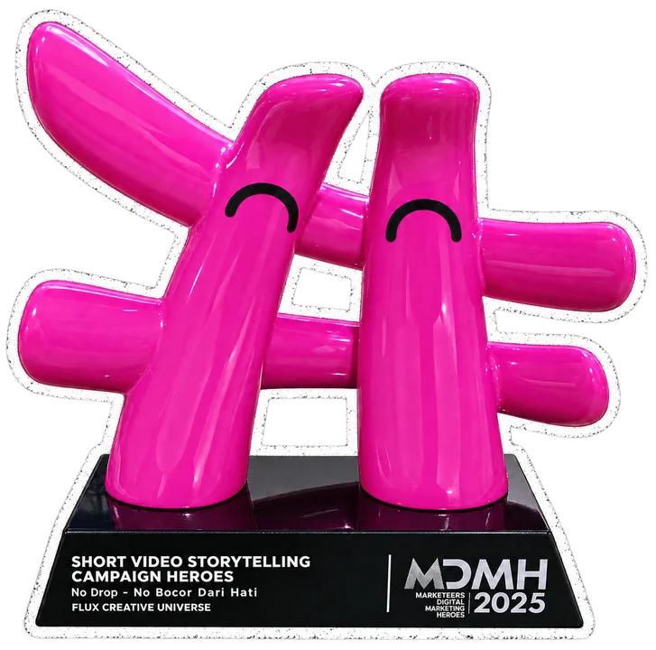
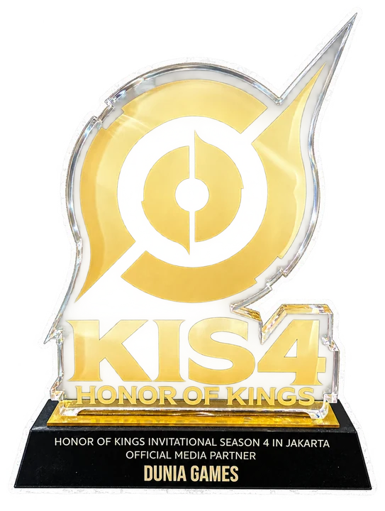
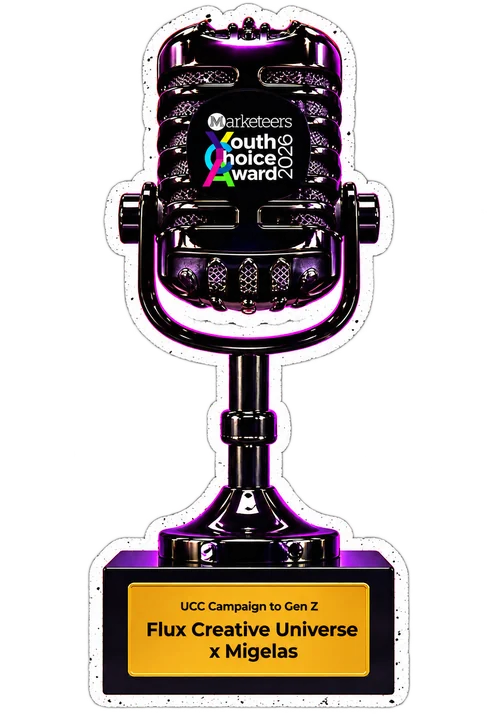
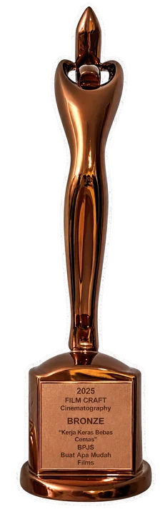

2025 4 AwardsMarketeers Digital Marketing Heroes 2025
4 kategori Heroes: Creative UGC, Creative Marketing, Engaging Content & Short Video Storytelling
Recognition
Karya yang lahir dari semesta FCU sudah dicatat, dirayakan, dan diakui — dari rekor nasional sampai panggung penghargaan kreatif.
In 2025, we've just been awarded

2025 4 Awards4 kategori Heroes: Creative UGC, Creative Marketing, Engaging Content & Short Video Storytelling

2025 9 AwardsMost Popular Media, Top Media Partner (Gold) FFWS Global Finals & 7 penghargaan lain

2026 SweepMenyapu bersih 3 kategori: Campus Digital Marketing, UGC Campaign & Video Series to Gen Z

2026 BronzeKampanye BPJS Ketenagakerjaan meraih Bronze untuk kategori Film Craft
Backed by believers
Mereka yang percaya pada semesta kreatif FCU sejak awal — dan ikut mendorong kami membangun masa depan konten Indonesia berbasis AI.

Portfolio DATA DUMMY
Lima panggung karya kami. Pilih satu frame untuk membuka galerinya, lalu klik karya untuk memutarnya.
Arahkan kursor ke frame · klik untuk membuka galeri
Meet the squad DATA DUMMY
Sembilan jagoan di balik semesta FCU. Geser panggungnya untuk memutar dan kenalan dengan kekuatan super masing-masing.
Klik jagoan untuk melihat profil lengkapnya
From concept to final cut, we craft AI-powered films, campaigns, and experiences that move people, built to shine across every screen and every touchpoint.
All servicesKategori